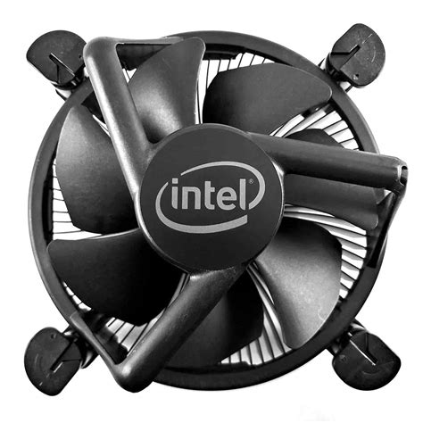

CPU-Fan:
Imagem de uma CPU-Fan de exemplo:

A CPU-Fan é basicamente o Cooler, no caso essa é a peça responsável para ventilar a CPU que é o componente que mais esquenta, junto a placa de vídeo que também precisa de ventilação.